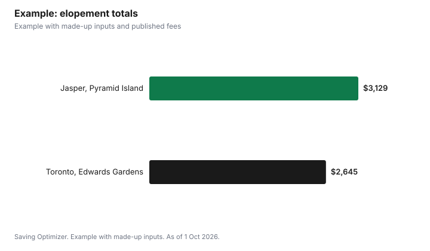

Weddings · Canada
Elopement Costs in Canada: Packages, National and City Parks, Permits and a Small Celebration After

Eloping in Canada can cost a few hundred dollars for the legal essentials, a marriage licence, an authorized officiant and two witnesses, plus whatever you spend on location, photography and a celebration afterward. Some scenic public spots cost little: Jasper National Park needs no approval for a ceremony in a public area and rents dedicated wedding venues for $531.75 (Athabasca River) or $77.25 (Pyramid Island), while Banff asks for a free registration form at least three days ahead and limits ceremonies to 20 people. In Toronto, park and conservatory ceremonies cost $260.07 an hour, taxes included. Elopement packages bundle these pieces; compare them with booking each part yourself.
Key takeaways
- Legal minimum: licence, authorized officiant, two witnesses.
- Jasper: wedding venues $531.75 or $77.25; public areas need no approval.
- Banff: free registration form 3 days before, 20 people maximum.
- Everyone in a national park needs a valid park pass.
- Toronto parks: $260.07 an hour, stand-up ceremonies only.
- Example with made-up inputs: an elopement budget.
What packages include
Elopement packages are sold by photographers, planners, officiants and venues. They may include the officiant, a photographer for a set number of hours, help with the licence, location scouting and permits, flowers, and sometimes witnesses. Ask exactly what is included, what is extra (travel, park passes, permits, hair and makeup), and whether the photographer and other vendors hold any required business licences for the location.
National parks
| Jasper National Park | Banff National Park | |
|---|---|---|
| Approval | None for public non-reservable areas; reservable venues are booked | Registration form returned at least 3 days before |
| Venue fees | Athabasca River $531.75; Pyramid Island $77.25 | No ceremony fee listed |
| Group size | Recommended maximum 25 | Maximum 20 participants |
| Setup | No shelters or chairs, except a few folding chairs for elderly or infirm guests | Small props only: arch, registration table, chair; no tents |
| Music | No loud music or P.A. systems | Quiet music; no amplification or generators |
| Alcohol | Not permitted in public areas | Open alcohol prohibited in public places |
| Confetti | Not permitted | Not permitted, including petals |
| Vendors | Business licence required | Business licence required, including photographers |
Jasper's reservable wedding venues are available from 1 May to the second Monday in October, and Parks Canada says 2027 reservations open on 3 November 2026 at 8 a.m. Mountain Time. Neither park gives exclusive use of an area; other visitors can be present. Every participant needs a valid park pass: in Jasper, daily admission is $12.25 per adult or $24.50 per family or group in one vehicle, youth 17 and under are free, and the Discovery Pass is $83.50 per adult.
Choosing a time and a backup
Banff's guidance suggests choosing a less popular location, or a time earlier or later in the day, to avoid congestion, and carpooling to keep traffic down; parking at popular spots fills quickly. Jasper says Parks Canada does not track weddings in the park, but local marriage commissioners can tell you when other ceremonies are booked at popular day-use areas. Mountain and lakeside weather can change quickly, so pick a second nearby spot, tell your photographer and officiant, and pack layers. Day-use areas in Banff are open from 7:00 to 23:00, and in Jasper they close after dusk.
City parks and conservatories
The City of Toronto allows wedding ceremonies in selected parks and conservatories at $260.07 per hour including taxes. Ceremonies are stand-up only, with no chairs, furniture, decorations, props, confetti, food or drink, and music must be soft pre-recorded or live unamplified. Outdoor sites typically run from 15 May to 30 September. Capacities range from 10 people at Centennial Park Conservatory and 20 at the Allan Gardens Palm House to 50 at Edwards Gardens and 100 at Ashbridge's Bay, Guild Park and Kew Gardens. Conservatory bookings from 5 to 7 p.m. carry a $50-per-hour staffing fee. Other cities set their own rules; check your municipality.
Officiant and witnesses
Ontario requires an authorized officiant and two witnesses, and the couple, witnesses and officiant sign immediately after the ceremony. A marriage by an Ontario judge or justice of the peace carries a $75 fee. If you elope with no guests, your photographer or officiant's assistant may be able to act as a witness; ask in advance. See wedding officiant fees and marriage licence fees by province. A licence is valid only in the province that issued it, so marrying in Alberta means an Alberta licence.
Photography
Photography is often the largest cost in an elopement. In Toronto parks, commercial photography is booked separately from $173.36 per two hours and requires $2 million in liability insurance naming the City. In Banff and Jasper, photographers operating in the park need a business licence. If you want drone shots, Transport Canada requires drones of 250 g or more to be registered and flown by a certified pilot, and basic operations must stay 30 m from people; parks may have their own restrictions. See wedding photographer costs.
Small celebration after
A dinner with family, a backyard party or a restaurant private room afterward lets you celebrate without a full reception. Budget per person including tax and tip, and send an announcement to those not invited. If you hold a party at home, see backyard weddings for permits, noise and alcohol rules.
Example with made-up inputs
These numbers are an example with made-up inputs, apart from published fees. A couple elopes at Pyramid Island in Jasper with four guests: venue $77.25; park passes for a made-up three days at $24.50 per vehicle for two vehicles, $147; a made-up $400 marriage commissioner fee; an Alberta licence at the $40 government fee plus a made-up $35 registry agent service fee, $75; a made-up $1,800 photographer for three hours; $150 flowers; dinner for six at $480. Total: $3,129.25 before travel and accommodation. The same day in Toronto's Edwards Gardens: one hour at $260.07, a $75 justice of the peace fee, a $180 licence, a made-up $1,500 photographer and the same flowers and dinner: $2,645.07.
| Item | Jasper (Pyramid Island) | Toronto (Edwards Gardens) |
|---|---|---|
| Venue | $77.25 | $260.07 |
| Park passes | $147.00 | $0 |
| Officiant | $400.00 | $75.00 |
| Licence | $75.00 | $180.00 |
| Photographer | $1,800.00 | $1,500.00 |
| Flowers | $150.00 | $150.00 |
| Dinner for six | $480.00 | $480.00 |
| Total | $3,129.25 | $2,645.07 |

Common mistakes
- Assuming you can reserve exclusive use of a public spot.
- Forgetting park passes for every guest.
- Hiring a photographer without the park's business licence.
- Using a licence from the wrong province.
- Bringing confetti, chairs or alcohol where they are banned.
Related: city hall weddings and destination weddings.
Sources
- Parks Canada, Jasper National Park: Event rentals; Fees, parks.canada.ca, as of 1 Oct 2026.
- Parks Canada, Banff National Park: Wedding ceremonies; Wedding Ceremony Registration Form (2026), as of 1 Oct 2026.
- City of Toronto, Wedding Ceremonies and Commercial Photography in Parks, toronto.ca, as of 1 Oct 2026.
- Government of Ontario, Getting married; Marriage Officiant's Guide, ontario.ca, as of 1 Oct 2026.
- Transport Canada, Drone safety, as of 1 Oct 2026.
- Government of Alberta, Get a marriage licence, alberta.ca, as of 1 Oct 2026.
- Officiant, photographer, flower and dinner amounts and the Alberta registry agent service fee in the example are made-up inputs.
Frequently asked questions
How much does it cost to get married in Jasper National Park?
Reservable wedding venues cost $531.75 (Athabasca River) or $77.25 (Pyramid Island). Ceremonies at public non-reservable areas need no approval. Everyone needs a park pass.
Do I need a permit to get married in Banff National Park?
Banff asks you to return a wedding ceremony registration form at least 3 days before. Ceremonies are limited to 20 participants.
Can I have chairs or alcohol at a national park wedding?
Banff allows only small props such as an arch, a table and a chair, and Jasper allows a few folding chairs for elderly or infirm guests. Alcohol is not permitted in public areas.
How much is a park wedding in Toronto?
$260.07 per hour including taxes, stand-up only, with no chairs, decorations, food or drink.
What do I legally need to elope in Ontario?
A marriage licence, an authorized officiant and two witnesses.
Do photographers need a licence in national parks?
Yes. Banff and Jasper say businesses operating in the park, including photographers, need a business licence.
Researched and drafted with AI assistance and fact-checked against official Canadian sources. How we create content.
Disclosure: Saving Optimizer may earn a commission if a partner link is added later. No partnership is claimed on this page. Education only.